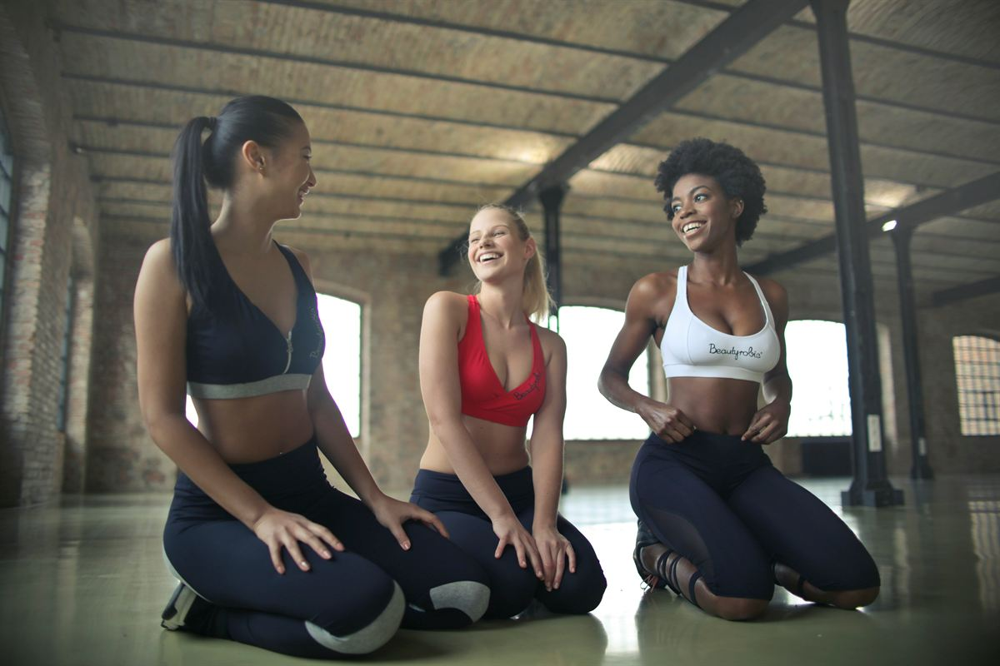

Здоровые мысли и сон
Сон и психическое здоровье тесно связаны: плохой сон усиливает тревогу, а тревога мешает спать. Разорвать этот круг помогают простые ежедневные привычки.

Сколько нужно спать
| Возраст | Рекомендуемая продолжительность |
|---|---|
| 6–13 лет | 9–11 часов |
| 14–17 лет | 8–10 часов |
| 18–64 года | 7–9 часов |
| 65 лет и старше | 7–8 часов |
Хронический недосып связан с ухудшением памяти и настроения, ослаблением иммунитета, набором веса и повышенным риском сердечно-сосудистых заболеваний. Почти так же важна регулярность: организм любит ложиться и просыпаться в одно и то же время.
Циклы сна
За ночь мы проходим 4–6 циклов, каждый в среднем длится около 90 минут. Внутри цикла сменяются лёгкий, глубокий и быстрый (REM) сон. Проснуться в конце цикла обычно легче, чем посреди глубокого сна, — на этом основан калькулятор ниже. Это приблизительная модель: длина циклов у всех разная и меняется даже в течение одной ночи.
Калькулятор сна
Ложитесь спать примерно в:
- 21:456 циклов · 9 ч сна
- 23:155 циклов · 7,5 ч сна
- 00:454 цикла · 6 ч сна — маловато
В расчёт заложено около 15 минут на засыпание.
10 правил гигиены сна
- Один режим. Ложитесь и вставайте в одно и то же время, даже в выходные — разница не больше часа.
- Утренний свет. Выйдите на улицу или к окну в первые часы после пробуждения: дневной свет настраивает внутренние часы.
- Кофеин — заранее. Последняя чашка кофе или крепкого чая — не позже чем за 6 часов до сна. Исследования показывают, что даже такой кофеин сокращает сон.
- Алкоголь мешает. Он помогает быстрее уснуть, но делает сон поверхностным и прерывистым во второй половине ночи.
- Лёгкий ужин. Последний плотный приём пищи — за 2–3 часа до сна.
- Прохладная тёмная спальня. Комфортная для сна температура — около 16–19 °C. Помогут плотные шторы, маска для сна и беруши.
- Мягкий вечерний свет. Яркий свет и экраны вечером задерживают выработку мелатонина. За час до сна приглушите свет и отложите гаджеты.
- Кровать — для сна. Не работайте и не смотрите сериалы в постели: мозг должен связывать её с отдыхом.
- Правило 20 минут. Не получается уснуть — встаньте и займитесь чем-то спокойным при тусклом свете, а вернитесь в кровать, когда почувствуете сонливость.
- Короткий дневной сон. Если хочется вздремнуть — 20–30 минут и не позже середины дня.
Стресс и тревога: что помогает
- Движение. Даже 20-минутная прогулка снижает напряжение и улучшает настроение.
- Дыхание. Медленный длинный выдох включает «тормозную» часть нервной системы. Попробуйте дыхание 4–7–8.
- Записывайте мысли. Тревоги на бумаге выглядят конкретнее и меньше крутятся в голове.
- Общение. Поддержка близких — один из самых сильных защитных факторов для психики. Позвоните другу, а не только напишите.
- Информационная гигиена. Ограничьте новости и ленты соцсетей, особенно перед сном.
- Маленькие радости. Хобби, природа, музыка. Простое упражнение — вечером вспомнить три хороших события дня.
Когда обратиться к специалисту
Если подавленное настроение, тревога или бессонница длятся больше двух недель и мешают работать, общаться или радоваться жизни, обратитесь к врачу — терапевту, психотерапевту или психиатру — или к психологу. Это такие же проблемы со здоровьем, как и любые другие, и они хорошо поддаются лечению. Например, хроническую бессонницу эффективно лечат методами когнитивно-поведенческой терапии, без снотворного.
Источники
- Sleep Foundation. How much sleep do adults need?
- Sleep Foundation. Stages of sleep
- Sleep Foundation. Sleep hygiene
- Sleep Foundation. The best temperature for sleep
- Drake C. et al. Caffeine effects on sleep taken 0, 3, or 6 hours before going to bed (2013)
- ВОЗ. Психическое здоровье
- NHS. How to be happier